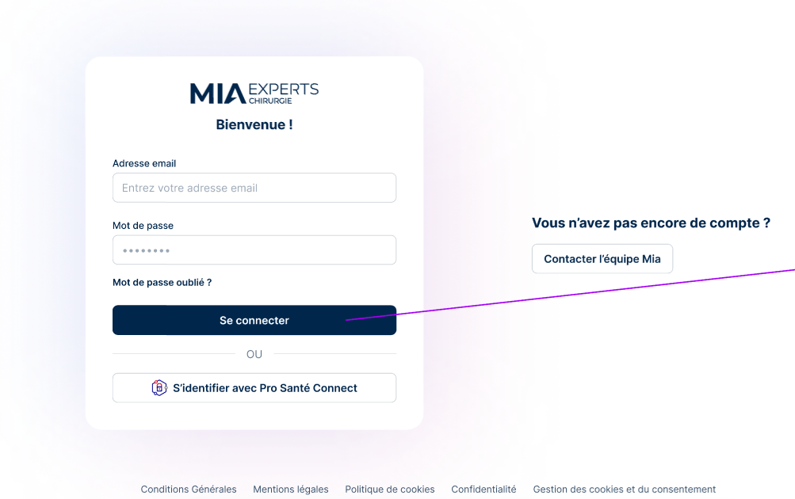

Bienvenue chez MIA Experts
Spécialistes dans notre domaine, nous mettons notre expertise à votre service. Naviguez dans le menu à gauche pour découvrir nos services et en savoir plus sur notre entreprise.
Au lancement du locigiel, qui est une page internet, vous devrez vous connecter avec vos identifiants ou via Pro santé connect.
MIA dispose d'un agenda qui est directement connectée à Doctolib si vous avez l'option. Ainsi tous les rendez-vous pris sur Doctolib apparaitront sur l'agenda MIA.

L'agenda dispose de deux couleurs afin de distinguer les rendez-vous de consultations (en bleu) et les blocs opératoires (en rose).
Vous saurez tout sur notre logiciel à partir de cette merveilleuse page. qui a été faite par nos soins et qui va nous servir pour la sofcot, tout ça tout ça. Biensur vous pouvez prendre rdv avec notre merveilleux Vincent pour une démonstration.